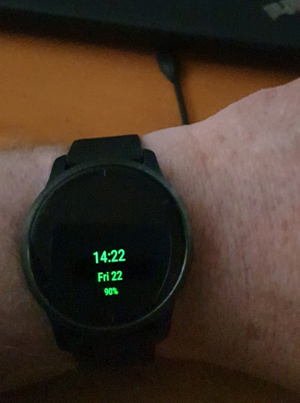

Some thoughts on always-on OLED displays on smart watches
 Modern smart watches are astonishingly versatile, but they often
fall short of a twenty-quid Timex when it comes to the basic
operation of telling the time. The problem is that, to provide a
credible battery life, the screens of smart watches generally need
to be woken up -- by pressing a button or some other gesture.
The rest of the time, they're dark.
If you're as old as me you'll remember the first generation of
digital watches back in the 70s. These had a featureless black face;
when you pressed a button, some tiny red LEDs would light up for a
few seconds.
Modern smart watches are astonishingly versatile, but they often
fall short of a twenty-quid Timex when it comes to the basic
operation of telling the time. The problem is that, to provide a
credible battery life, the screens of smart watches generally need
to be woken up -- by pressing a button or some other gesture.
The rest of the time, they're dark.
If you're as old as me you'll remember the first generation of
digital watches back in the 70s. These had a featureless black face;
when you pressed a button, some tiny red LEDs would light up for a
few seconds.
That's where things mostly still stand, with smart watches.
In the last few years, we've started to see smart watches with OLED screens. With care, OLED displays can be made to use far less power than an LCD backlight. With even more care, it's possible to provide a smart watch with an 'always on' display. Garmin, Apple, and Samsung all have products that offer some level of always-on display. This should make your £300 smart watch as good as a cheap Timex for telling the time. But is it really that simple? OLED displays have two significant problems -- one related to power consumption, and one to burn-in.
Problems with always-on displays: power consumption
With an LCD/IPS display, nearly all the energy is consumed by the backlight. It doesn't matter all that much what content we display. It doesn't even matter enormously how often the display gets updated although, of course, rapid refresh rates are probably accompanied by higher power consumption due to computation.
An OLED display, however, consumes essentially no energy when it is showing black. Each pixel is a tiny lamp in its own right and, when the display is black, no pixel is illuminated.
So, while we had more-or-less complete freedom when designing watch faces for smart watches with LCD displays, that's not the case with OLED. Fine lines on black backgrounds are typical and, in fact, necessary.
This consideration is particularly relevant for an always-on display, because power consumption needs to be held to an absolute minimum.
The compromise, of course, is between power consumption and readability. Large, bright symbols are more readable, but use more power. The photo below shows an always-on watch face called 'MOWF' that I designed for my Garmin Venu 2. This is how the display looks in idle mode; when the display is active -- the wearer has woken it with a button-press or gesture -- then we have more freedom in the display layout, because it will only be active for a small proportion of the time. In low-power mode -- which might be active most of the time -- we need to be much more careful.

I've chosen green text here, because the human eye is especially sensitive to the colour green. Green illumination uses less than half the energy of white, but isn't much less visible. I've made the text as small and thin as I can read at arms length. In this low-power mode, I'm not displaying anything that changes more frequently than once a minute -- the Garmin watch only allows the watch face to update at minute intervals in lower power mode, so there's no point.
Making the display text small also makes it easier to control burn-in, as I'll explain.
Problems with always-on displays: burn-in
Even good-quality OLED displays have a problem with burn-in, just as CRT monitors did. Burn-in was rarely a problem with LCD displays.
When the same pixels are illuminated for an extended period of time, the heat that they generate causes chemical changes in the OLED film. Eventually, an image will be permanently etched onto the display.
The first Garmin OLED devices were particularly prone to this problem, although things seem to have improved. Still, we do have to worry about burn-in with an always-on display -- there's no avoiding it.
I'm not sure how this is handled by other manufacturers, but Garmin's watches protect their displays by monitoring for behaviour that would likely cause burn-in. In particular, in low-power mode no more than 10% of screen pixels may be illuminated at a time, and no pixel may be illuminated for more than three minutes.
In practice, it isn't hard to meet the 10% test, because we'll be trying to minimize illumination to improve battery life anyway. The three-minute test is a much harder challenge to meet.
Whether a clock's display is analogue or digital, parts of it are likely to be relatively static. If you look at the built-in analogue watch faces in Garmin's watches you'll see that, in low-power mode, all the superfluous detail is removed. The watch hands are still drawn, but the numerals and decorations are removed.
By itself this isn't enough, because watch hands don't move very quickly. A potential solution is to shift the whole display at intervals of a minute or so, so that different pixels are illuminated. The high-ish resolution of these devices means that a pixel-by-pixel movement will hardly be seen by the wearer. Unfortunately, it's hard to guarantee that every single pixel gets its share of being dark.
In my MOWF watch face, the text in low-power mode is small enough that it occupies only half the display. So it's easy to move it between screen regions such that no pixel is ever illuminated for more than a minute. With a more subtle (interesting) display, that's not going to be easy to achieve. I'm not sure that any of Garmin's built-in watch faces manage this.
Even in high-power mode -- where the wearer is actively looking at the watch -- I still think it's advisable to engage in a measure of pixel-shifting. The risk of burn-in is probably not too high in this mode, because the watch will usually only enter it for seconds at a time. Still, why take the risk? These things are expensive, and the screens aren't owner-repairable. So in my MOWF watch face, the high-power display is also shifted at minute intervals, but only over a relatively small region of the screen.
The reality is that we don't really know what measures are needed to prevent burn-in completely. OLED smart watches have only been around for a couple of years, and I'm hoping that a product this expensive will last a good long time. I'm not taking any chances with my Garmin Venu 2, which is why I use my own, low-power, burn-in-reducing watch face.
So is a smart watch as good as a twenty-quid Timex?
When it comes to telling the time, the answer is probably still 'no'. Although always-on technology is available, the need to prevent burn-in and to reduce power consumption continues to reduce the usefulness. It's interesting that Garmin's always-on mode is not really always-on -- the display has to be woken specifically with a button press during designated sleep hours. Garmin says that's to prevent the watch waking its wearer up at night; but if I'm awake anyway, and want to know the time, it would be nice if I didn't have to hunt for the button to turn it on, just as I did in 1974.
So could it be that Garmin (and others) aren't so confident in their always-on technology that they don't really allow 'always' to mean what it should? Time, I suppose, will tell.
Incidentally, if you're interested in my MOWF watch face for Garmin OLED watches, the source code and installable .PRG file are available in my GitHub repository.